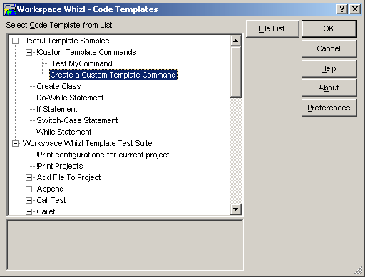

The Template Selection dialog represents a simple way to categorize various templates. Templates are organized in a tree formation. Template groups, are top-level items in the template tree. Subitems under each group are governed by the individual template's full name. Further information can be found here.
The left and right arrow keys collapse and expand tree branches. The up and down arrow keys move throughout the tree. Pressing an alphanumeric letter will move the selection caret to a tree item starting with the letter. Pressing Enter or double-clicking on a tree items executes the template.
Right-clicking on a template opens the parent template file and centers the cursor on the start of the template definition.
Pressing the File List button shows the Template File List dialog.